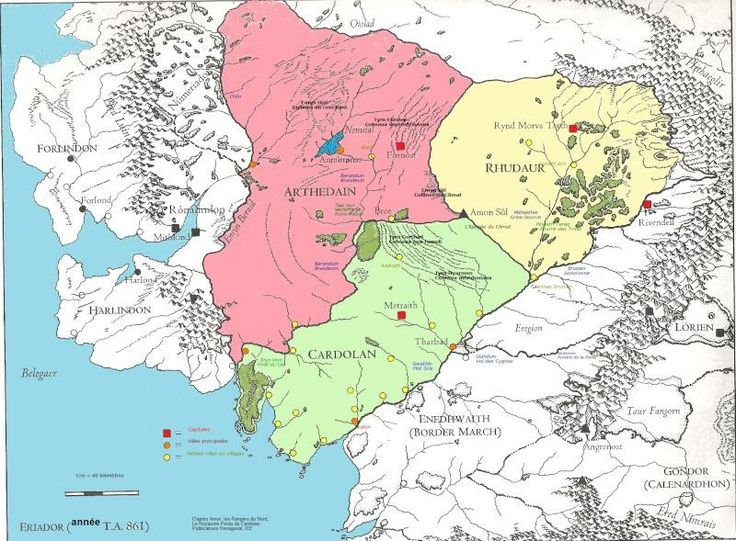

Le Royaume d'Arnor (nom sindarin pour "Pays des Rois") est l'un des deux royaumes en exil des Dúnedain. À son apogée, il est le plus évolué et puissant royaume de la Terre du Milieu, s'étendant sur la moitié nord de l'Eriador, entre les fleuves Lhûn, à l'ouest et Bruinen, à l'est. Sa capitale est Annúminas.L'Arnor est composé de trois régions: L'Arthedain, Le Cardolan et Le Rhudaur.
